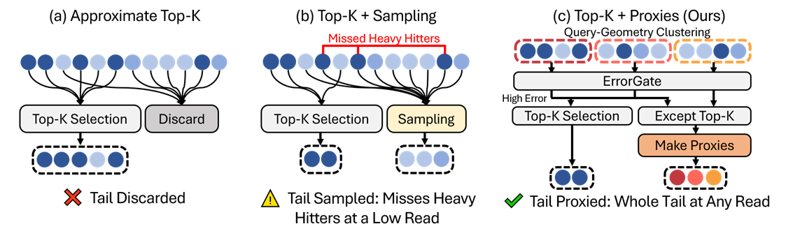
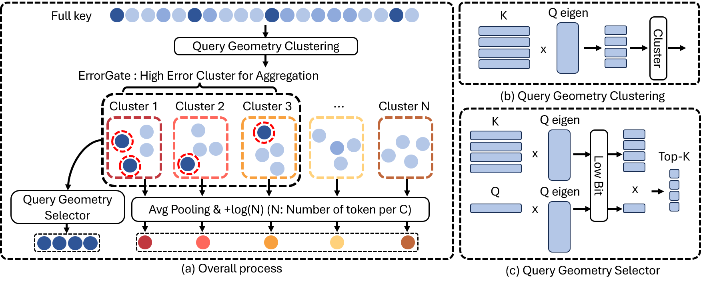
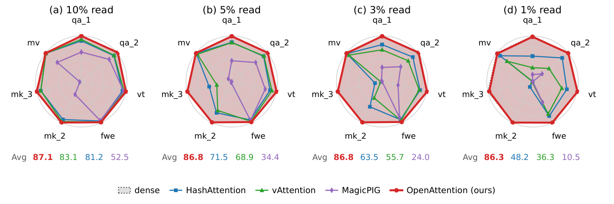
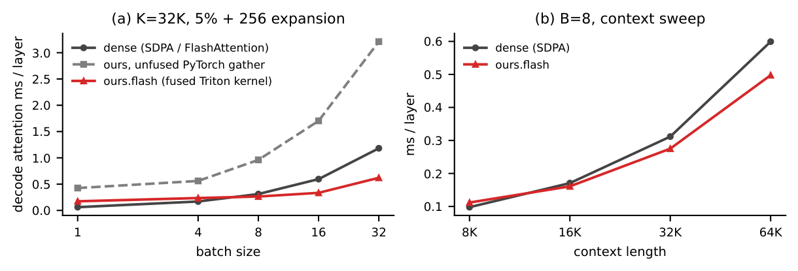

TL;DR — Sparse attention must do something with the 99% of the KV cache it does not read.
Discarding that tail biases the output and sampling it fails at low reads.
OpenAttention folds every unread token into a few count-aware cluster proxies and lets an
ErrorGate spend the exact-read budget where the estimated error is largest. The result:
99% of dense accuracy at a 1% read on RULER-32K HARD (86.30 vs 87.04, best baseline 48.22),
state-of-the-art across models and context lengths, and a fused decode kernel that runs the
attention stage 10× faster than dense attention.
99%
of dense accuracy at a 1% read (86.30 vs 87.04, RULER-32K HARD)
faster decoding than the stock HF dense path (52.2 → 11.4 ms/token, batch 1, H100)
Demo: same GPU, same model, 1% of the reads
Llama-3.1-8B-Instruct generating from a 30,012-token document on one H100, batch 1.
Left: Hugging Face dense attention out of the box (default SDPA backend, eager). Right: the deployed
OpenAttention decode path (1% total read, fused Triton selection, one CUDA graph per step).
Recorded in real time with demo/record_demo.py; both runs stream tokens with one host
sync per token, exactly as a server would.
Method in one minute
The problem: what happens to the unread tail?

Figure: Three ways to treat the tokens a sparse method does not read.
(a) Top-k methods discard the tail, biasing the softmax. (b) MagicPIG and vAttention sample it,
but the sampling error grows sharply as the read shrinks — below a 5% read the tail likely holds
heavy hitters the selector missed. (c) OpenAttention folds the whole tail into count-aware cluster
proxies: one token per cluster carrying its mean key, mean value and count, so the attention mass
is preserved.
Two findings drive the design. First, the simplest possible proxy — one token folding the
entire tail into its count-aware mean — already yields lower output error than a sample at every
read behind a practical selector. Second, in closed form, at low reads sampling nearly
doubles the weight error of discarding while a single proxy stays below it.
The pipeline

Figure: One decode step. QGS scans int8 key codes and picks the top-k;
ErrorGate ranks clusters by estimated weight error and water-fills the exact-read budget;
everything unread becomes its cluster's proxy; OpenAttention.flash fuses all three streams into
one online-softmax pass.
QGC — Query-Geometry Clustering. Keys are clustered once per prefill in a rank-16
projection aligned with the directions queries actually probe (the top eigenvectors of
M = ½Mst + ½Mq). Training-free; the static metric
Mst is measured once on 18 held-out requests.
QGS — Query-Geometry Selector. Each step scans rank-32 int8 key codes in the same
geometry and takes the top-k. No learned hash functions, no per-model training.
ErrorGate. Each cluster caches count, mean and diagonal-variance statistics. ErrorGate
estimates each cluster's softmax-weight error and allocates the exact-read budget by
water-filling — unlike prior methods that rank clusters by centroid score alone.
Count-aware proxies. Every token still unread joins its cluster's proxy with logit
z̄b + log nb and the mean value, keeping the softmax mass-preserving.
OpenAttention.flash. A fused Triton kernel computes selected tokens, expanded tokens
and proxies in one online-softmax pass.
Accuracy at matched total reads
RULER-32K HARD (qa_1, qa_2, vt, fwe, niah_multikey_2/3, niah_multivalue; 200 requests each),
Llama-3.1-8B-Instruct. Every stream a method reads is charged against its budget, including
OpenAttention's proxy statistics. Dense attention scores 87.04.
Total read
MagicPIG
HashAttention
vAttention
OpenAttention
10%
52.52
81.23
83.08
87.08
5%
34.42
71.55
68.86
86.82
3%
24.01
63.48
55.74
86.83
1%
10.53
48.22
36.29
86.30

Figure: Per-task accuracy relative to dense (grey, 100%) at 10, 5, 3 and 1%
total reads. The baselines collapse as the read shrinks; OpenAttention stays within one point of
dense down to a 1% read. It also transfers: best at a 3% read on DeepSeek-R1-Distill-Llama-8B
(73.49, dense 73.46) and Mistral-7B (64.83, dense 65.46), and across 16K–96K contexts.
Speed

Figure: Decode attention stage, Llama-3.1-8B shapes on one H100.
OpenAttention.flash reads 1–3% of the KV rows plus the proxies and stays well under fused dense
SDPA as batch and context grow; the unfused gather paths of prior methods are slower than
dense.
Attention stage (ms per layer, 32K context, batch 32)
Budget
dense SDPA
OpenAttention (PyTorch)
OpenAttention.flash
1%
1.196
0.463
0.114
3%
1.194
1.260
0.233
End to end (real 30K-token prompt, prefill + 128 decode steps, one H100, batch 1)
ms/token
end-to-end s
dense, HF default (SDPA→cuDNN, eager)
52.2
8.33
dense, SDPA FlashAttention backend
17.6
3.89
OpenAttention 1% (CUDA graph)
11.4
3.19
The deployed path runs the full pipeline (QGC + QGS + ErrorGate + proxies) as sparse
GPU kernels with one CUDA graph per decode step, and reproduces the benchmark accuracy (86.32 at 1%
under its protocol vs 87.07 dense). The attention-stage advantage above grows with batch size and
context length.
BibTeX
@article{openattention2026,
title = {OpenAttention: One Percent Is Enough with Tail Proxies},
author = {Anonymous},
journal = {Under review},
year = {2026}
}